LOVE
I moved to Philadelphia in 1988 and I love this city with all of my heart.
1682
Philadelphia was founded
Philadelphia was founded in 1682 by William Penn.
Phil adelphiaPhilia: Love, Friendship or AffectionAdelphos: Brotherly or Sisterly
The name "Philadelphia" itself contains one of the ancient Greek words for love
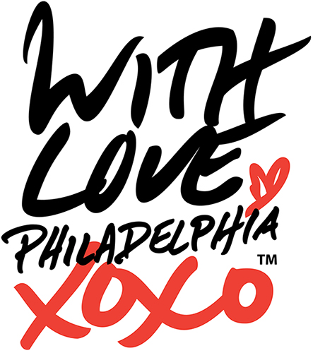
Philadelphia has a long and pretty decent relationship with love.
1780
The first state to repeal its anti-interracial marriage law
In 1780 Pennsylvania was the first state to repeal its anti-interracial marriage law
187 years before Loving v. Virgina made interracial marriage legal nationwide.
1965
John F. Kennedy Plaza
In 1965 Philadelphia opened John F. Kennedy Plaza, but we all know it as...
"A Love Letter For You"
In 2009 West Philly native Steve Powers’ created an art installation called "A Love Letter For You."
5. it is series of 50 rooftop murals from 45th to 63rd Streets along Market. You can see all the murals while riding the El.
4. it is series of 50 rooftop murals from 45th to 63rd Streets along Market. You can see all the murals while riding the El.
3. it is series of 50 rooftop murals from 45th to 63rd Streets along Market. You can see all the murals while riding the El.
2. it is series of 50 rooftop murals from 45th to 63rd Streets along Market. You can see all the murals while riding the El.
1. it is series of 50 rooftop murals from 45th to 63rd Streets along Market. You can see all the murals while riding the El.
SEPTA even had a Valentine's Day Love Train for a number of years that would tour the murals and people would hold their weddings on the train.
October 11, 2018
30th Anniversary of National Coming Day
Just a couple weeks ago In celebration of 30th National Coming Day.
The Mayor's Office of LGBTQ Affairs held an "Out in Love" LGBTQ wedding event at City Hall! This event is extra special because of another famous Philadelphian.
1929
Edie Windsor was born in Philadelphia
Edie was born in 1929 and she grew up in Philadelphia and attended Philly public schools. She graduated from Temple University in 1950 and later
she worked at IBM for 16 years starting off as a mainframe programmer and leaving with the highest level technical position at IBM, Senior Systems Programmer.
In 1965 Edie started a relationship with Thea Spyer and 42 years later they got legally married in Canada after doctors told Thea she had only a year left to live.
After Thea died in 2007, Edie inherited Thea's estate and was required to pay over $350K in taxes which she wouldn't have to if their marriage was legally recognized. She filed a lawsuit that went all the way to the Supreme court, and in 2013, because of Edie's tenacity, the Supreme Court found the Defense of Marriage Act unconstitutional and same-sex marriage became legal for everyone in the US.
In 2017 Edie died at the age of 88. And just a few weeks ago, Philly renamed the block of 13th Street between Walnut and Locust "Edie Windsor Way"
This brave, Philadelphia lady changed millions of lives, including mine, with the power of love.
INDEPENDENCE
Philadelphia is not all about love, we have an independent spirit as well.
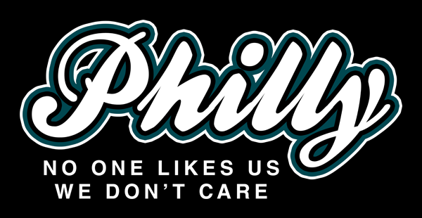
We don't always get along with others, but sometimes a tasks calls for independence.
Even if people tell you not to, sometimes we need to take risks and approach a challenge with a strategy that is independent of what is considered safe. When we take big risks can sometimes attain great rewards.
September 24, 2018
On September 24, 2018 Philadelphia took what may beens one of its biggest risks in its history.
The Philadelphia Flyers unveiled Gritty, it's new official mascot.
And the backlash was swift and brutal.
There was a GoFundMe launched to euthanize Gritty
There was a GoFundMe launched to euthanize Gritty
National TV shows were making fun of Gritty
National TV shows were making fun of Gritty
John Oliver went on a long rant trashing Gritty.
John Oliver went on a long rant trashing Gritty.
Twitter complained about Philly getting it wrong....again
Twitter complained about Philly getting it wrong....again
Twitter complained about Philly getting it wrong....again
And then inevitably the Memes started rolling in.
Had the Flyers made a huge mistake? Should they have listened to the criticisms and revise the new mascot to be less scary?
People started to understand Gritty.
People started to understand Gritty.
Gritty got a beer named after them - which is a very Philly thing to do.
Gritty got a beer named after them - which is a very Philly thing to do.
A couple had a Gritty wedding cake for their wedding. Gritty went from frighting Muppet show reject to Lovable Monster.
A couple had a Gritty wedding cake for their wedding. Gritty went from frighting Muppet show reject to Lovable Monster.
A couple had a Gritty wedding cake for their wedding. Gritty went from frighting Muppet show reject to Lovable Monster.
#TeamGritty
Suddenly Philly was #TeamGritty
Restaurants started making Gritty-themed food items like cupcakes.
People were dressing their kids up as Gritty. And we had the inevitable...
The Flyers nailed it. Gritty captured the independent, bold thinking of Philadelphia. They took a risk, powered through the backlash and were rewarded with a big success.
Since WordPress version 2.0, TinyMCE has been the default WordPress editor. That was 13 years ago. It's one big editor with a visual and text mode and some formatting buttons to help insert HTML tags around content without needing to know any code.
For those of you not familiar with Gutenberg, it is a new, block style editor coming to WordPress 5.0 along with a complete overhaul of the post and page editing screens. Gutenberg has been over two years in the making and will be released as early as November 19. Instead of one big editor, each piece of content is placed in a block with its own unique settings that can be moved around the page as needed.
Change is hard, but sometimes you have to make a dramatic change to evolve.
This is me and my friend Mika. You may know her from her talks at WordCamps all over the world or from her involvement with the WordPress Plugin Directory.
LezWatch.TV
The Greatest Database of Queer Female, Non-Binary, & Transgender TV
Her and I built and run a site called LezWatch.TV which is a database of Queer Female, Non-Binary, & Transgender TV characters and their shows. Right now our database has over 3,000 characters and 1,000 shows.
We
We both love television and in addition to keeping the database, we also write about TV for the site.
The Queerest Things I Watched Last Week
One year ago, in this very building, at this very event, I came up with the idea to start a weekly column where I would recap all the shows I watched the previous week with LGBT content. And on Monday...
One year of blogging weekly
I will publish my 52nd post marking one year of writing weekly. I have built countless websites, but I have never before written regularly for one.
Last August Mika installed the Gutenberg plugin on the site and I, a person who has never even used the Visual editor tab to write content, decided to start using it for my weekly post.
this to this. It was not an easy transition. There was anger and there was cursing. Whenever my wife heard me yelling at my laptop, she knew I was working on my post in Gutenberg.
I believe I am doing a good job by building well-crafted web tools for people to use, by focusing on code and back-end efficiency, but I was not doing enough to experience managing a site from a user's experience. Our users never see our beautiful code, they only experience the tools' interface day after day as they manage the content on their sites.
As the weeks passed, I got used to Gutenberg and the block editor itself got better with every release. I absolutely fell in love with the redesigned editing screen in general
and realized it improved my writing workflow. Mika also made us some custom blocks for things like listcicles, spoiler warnings and other often used unique content for the site.
Those custom blocks made the code behind our content better, because to get things to look correctly in a giant TinyMCE editor you have to make some hacky html. Even though at this point I was on board with Gutenberg, it was something else really convinced me it was the right direction for WordPress.
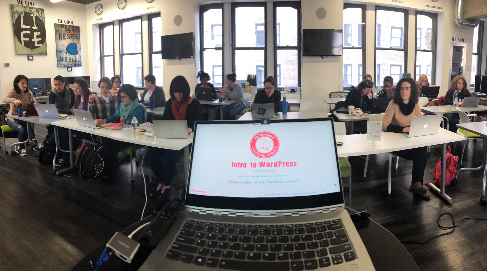
I have been teaching WordPress classes for six years. I really love it and I benefit from it as well because it exposes me to the...
NUX
New User Experience
Say out loud.
There will be bumps in the road, but now I'm a fan and I'm excited to see a Gutenberg future.
This was taken inside the Pennsylvania Academy of the Fine Arts the first and oldest art museum in the United States.
ENIAC The world’s first electronic digital computer
The Electronic Numerical Integrator And Computer
The first programmers for ENIAC were a group of six women chosen from around 200 women employed as "Computers" at the UPENN Moore School of Electrical Engineering. The job of Computer was to produce mathematical formulas needed for a scientific studies engineering projects with mechanical calculators.
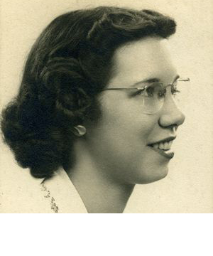
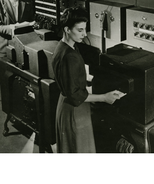
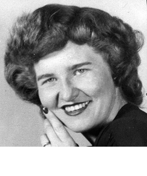
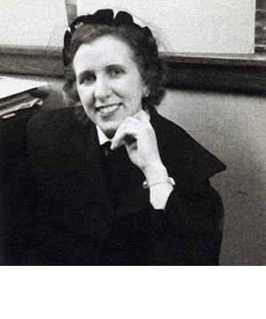
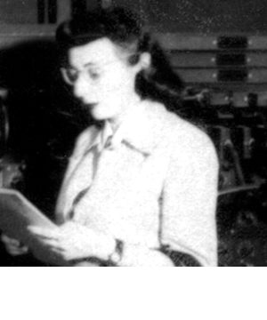
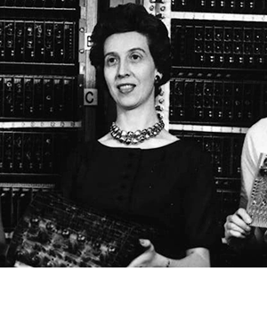
Read the names outloud
They got to know the machine so well, they could troubleshoot bugs faster than the engineers who built the hardware. The women programmed ENIAC to perform complex sequences of operations including loops, branches and subroutines.
Eniac John Mauchly and J. Presper Eckert were the inventors of ENIAC and on February 15, 1946 they planned a public unveiling of the previously top-secret machine. At the event, they wanted to do a live demo of a missile trajectory calculation and they needed to women's help to pull it off.
Two weeks before the event, the women were asked if they could program ENIAC to do this in time and they stepped up to the challenge.
They worked non-stop for those two weeks and at the demonstration, ENIAC was able to generate a set of missile trajectory calculations in 15 seconds that would have taken humans several weeks to complete.
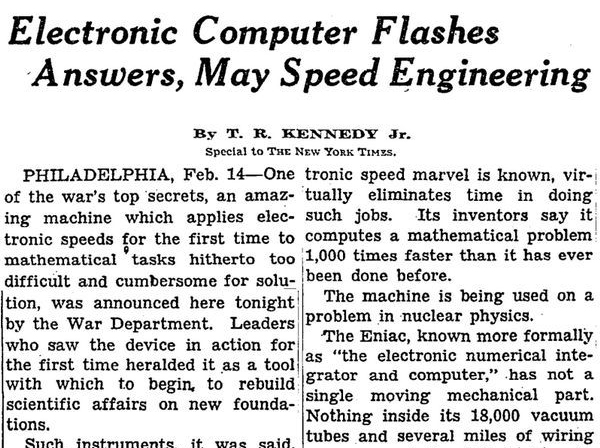
The event was a huge success. The unveiling of ENIAC made the front page of the New York Times. People were calling it a "Giant Brain." That night at Penn's Houston Hall, they held a big celebratory dinner, but the ENIAC programmers weren't even invited. And following the event the people who got credit for ENIAC's success were these two.
Now a days we see programmers as the people who make the magic happen, but back then it was considered clerical task...the real stars were the folks who designed and built the hardware.
The programmers were erased from the story for decades. Historians mistakenly identified the women from the photos as “refrigerator ladies” meaning models who were only in the photos to make the product look good.
What are the residual effects of erasing the team of women who were the programmers for the world's first programmable general-purpose electronic digital computer from history?
Though women now represent 47% of the workforce, only 20% of tech jobs are held by women.
Also, women are twice as likely then men to quit their jobs in the tech industry. And the numbers get worse when you look at women of color in tech. When you don't see yourself represented in an industry you don't know it's a career you can have even if there is no question about anyone's ability to perform well in tech based on who they are.
Girl Develop It
This is why I have been teaching with Girl Develop It for the past six years. Girl Develop It provides affordable programs for women to learn web and software development through in-person classes.
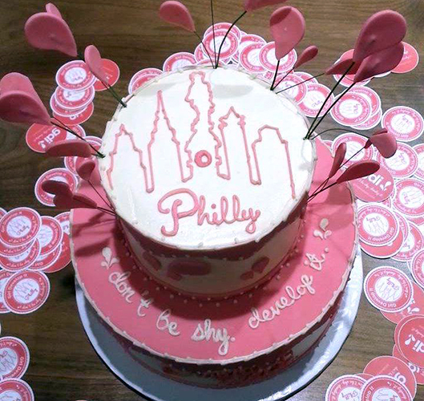
The Girl Develop It Philly chapter is one of the most active, and has helped launch tech careers for dozens of women who were not involved with tech before participating in GDI. Also, GDI Philly is responsible for creating another first...
The first web develop program in a women's prison. We developed the curriculum for and teach a series of classes at the Baylor Women's Correctional Institution in Delaware from Intro to Web concepts, HTML and CSS and WordPress. And by the way...
The students there prefer Gutenberg, as well.
Now, I want to issue a challenge to you all. Some thing you can try to do in the next 12 months to help make the WordPress community better. I offer to you to take the.
Take the
LOVE / INDEPENDENCE / FIRSTS
Challenge
Operate from a place of
fear FUN!
Fear keeps us from moving forward. When we want to be proactive but then do nothing because we're afraid of what people may think, that keeps the status quo which is worse than trying. There is no such thing as perfection, we all make mistakes. Getting to know people not like you and making new friends is fun. Expanding your networks is beneficial and life enriching.
Get out of your bubble
Make your next 20 Twitter followers people not like you .
National organizations
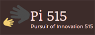
These are 10 National organizations teaching people who are underrepresented in tech to code. Follow their Executive Directors and tune in to the conversations they're having.
Like and listen
Show support without inserting yourself into the conversation .
We could all stand to listen more and talk less. When someone who is not like you, gives you a view of their life from their perspective, it is a gift. Take it in and if it moves you, show your support with a retweet or the like button.
Be the minority in the room
Go to a networking event where everyone isn't like you .
Even if you are used to being the only person like you in the room, you can find an event with folks that are new to you. You can go to an open captioned movie. Or attending a presentation or performance of a person with a different background than you.
Diverse Networking Groups
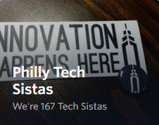
In Philly we have multiple diverse tech groups. Meetup.com is a great resource to find groups in your area.
Diverse Chambers of Commerce
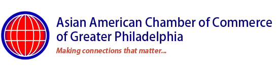
In Philadelphia we have an assortment of diverse chambers of commerce and membership is open to allies. People go to chamber events because they want to meet folks they can potentially do business with. And with all of these organizations there are sponsorship opportunities for you to help the diverse business community and get to involved in these networks.
Meet diverse technologists
TA a Girl Develop It class .
Multiple times I've heard, "I would hire women if there were any." Women and non-binary folks make up 51% of the population, just because someone doesn't know any doesn't mean they don't exist.
Anyone can volunteer to TA for a Girl Develop It class regardless of their gender orientation. It's fun, rewarding, and you will be exposed to a wealth of amazingly talented people.
Avoid default pronouns
Don't only use "he" when referring to hypothetical people .
Programmer ≠ He
I've been to countless presentations, been in conversations and read posts where speaker or writers refer to hypothetical, fictitious programmers, developers, hires & clients as he, him & guys.
When referring to hypothetical people, use gender neutral pronouns or switch back and forth equally
Outloud then
Reflect reality
Don't accept homogeneity as normal.
This is one of my heroes Shonda Rhimes. She is an award winning creator of many television shows like Grey's Anatomy, Private Practice, Scandal, How to Get Away with Murder, Station 19 and many others. Shonda is a very successful woman with a net worth of over 120 million dollars. What has been one of her keys to success?
Diversity
In addition to being entertaining and addictive, Shonda's programs are also incredibly diverse and appeal to the widest audience possible. Almost everyone will see a person from their demographic reflected back to them as a character on her shows.
Ironically SR doesn't like the word Diversity.
normalizing . I am making TV look like the world looks. Women, people of color, LGBTQ people equal way more than 50 percent of the population. Which means it ain't out of the ordinary.
Diversity for diversity's normalizing's sake
"Diversity for diversity's sake" implies you're assembling an artificial group of people just for the sake of diversity. Instead of "Diversity for diversity's sake," it should be Diversity for Normalizing's sake. Reality is diverse. Homogeneity is a world like the Smurfs and we all know that is not real.
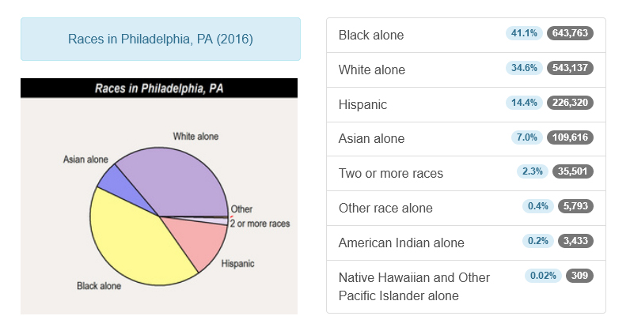
If you look at Philadelphia statistics, the reality is we are no where near a homogeneous city. When you have the opportunity to normalize, do it.
Normalize:
Slidedecks
Examples
Hypothetical people
Photos
Panels
Speakers
Some example situations are... [read]
Consciously Unbias
We all have unconscious bias, work to challenge it .
All of us grow up leaning bias. It's okay and not something to spend time feeling bad about, but instead, spend time consciously working on it.
Applicants with "white-sounding" names were 50 percent more likely to get called for an interview.
Professors from the U of Chicago sent fictitious resumes to 1,300 help-wanted ads Boston Globe & Chicago Tribune. Success of each resume = Callbacks for interviews. The resumes were identical except for the names white / aa.
Faculty participants rated the male applicant as significantly more competent and hire-able than the (identical) female applicant.
In a Yale University randomized double-blind study, 127 US STEM professors asked to evaluate resumes. Resumes were identical, except half "John" and half "Jennifer". Participants rated John significantly more competent and hire-able than Jennifer. And the ones would hire Jennifer offered 13% less in salary than John.
Think
The next time you are in the position to hire, approve a speaker for a conference, or any situation where you are reviewing people, think hard why your first impulse may be to turn someone down. Work to strive for a true Meritocracy.
32.1%
Nearly a third of all websites use WordPress and with that comes a huge responsibility. Who is participating in the creation of this software and who feels comfortable joining this community. We can't fall into the homogeneity creating for reality trap. We all have a responsibility to make this better.
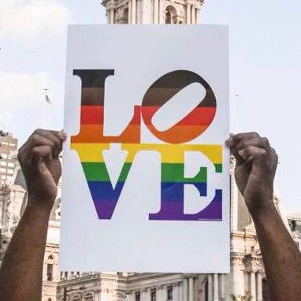
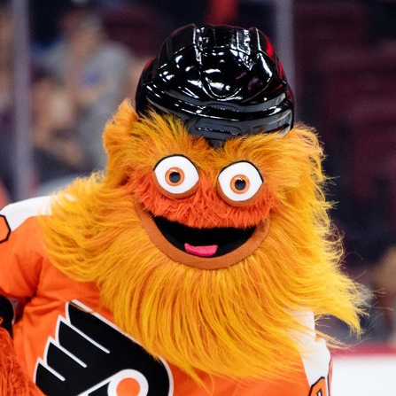
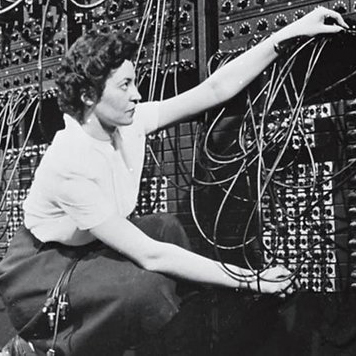
Use the loving, independent and pioneering spirit of Philadelphia, with all its good and bad, to guide you to help make a better Internet.


 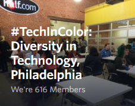
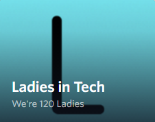
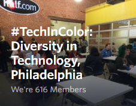
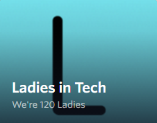